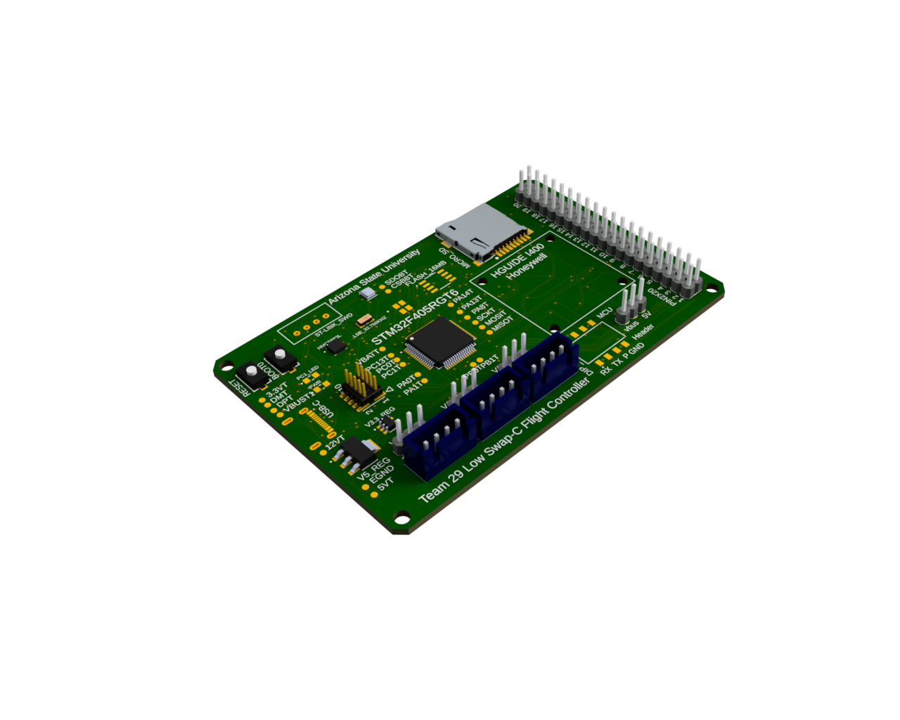
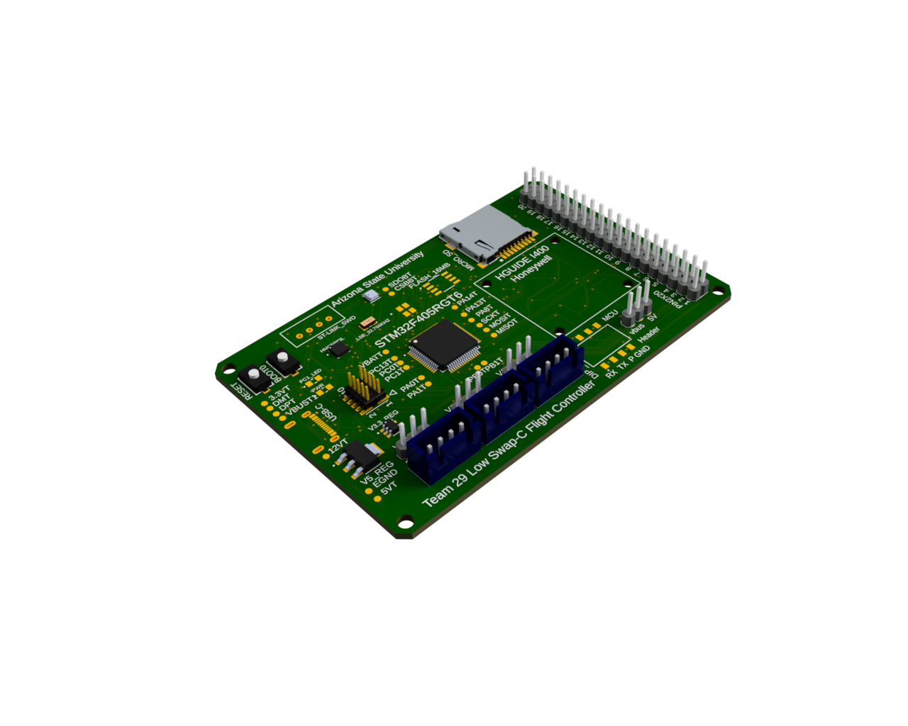

This capstone project presents a Low Size, Weight, Power, and Cost (SWaP-C) flight controller designed for UAV and embedded aerospace systems. The goal is to build an efficient, modular, and cost-effective flight control unit for experimental and educational use cases.
 


Preliminary tests confirmed stable sensor communication, accurate orientation tracking, and successful signal generation for ESC control. Further performance evaluations are ongoing.
This section will demonstrate how IMU data (acceleration, angular rate, orientation) is processed in real time. Future updates will include visuals and math breakdowns for sensor fusion and control response.
Team 29 – A multidisciplinary engineering team from Arizona State University specializing in embedded systems, aerospace, and control engineering.